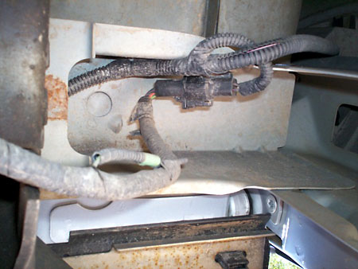
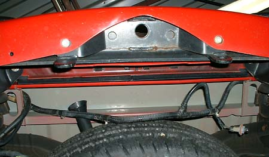
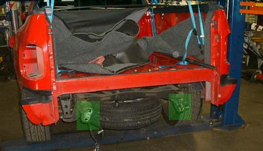
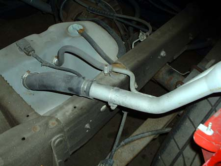
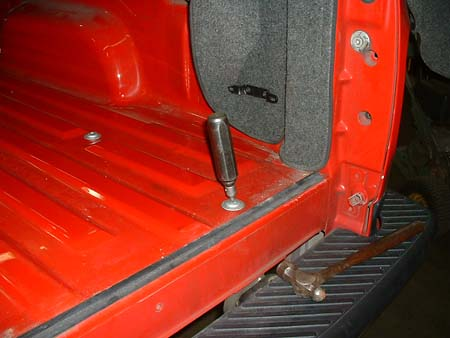
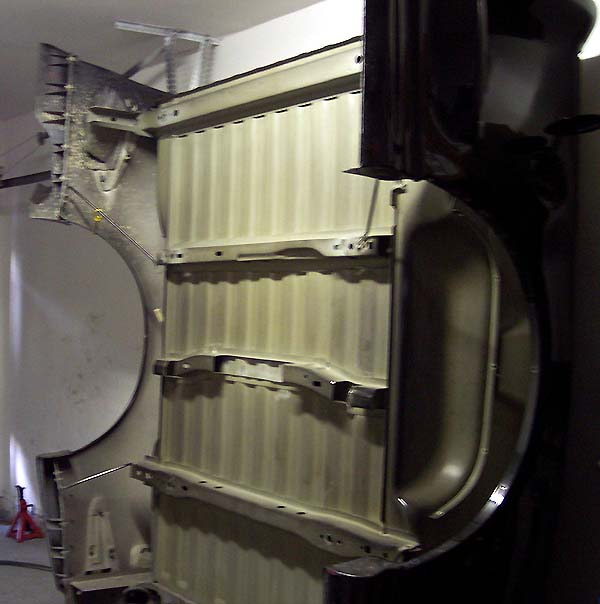
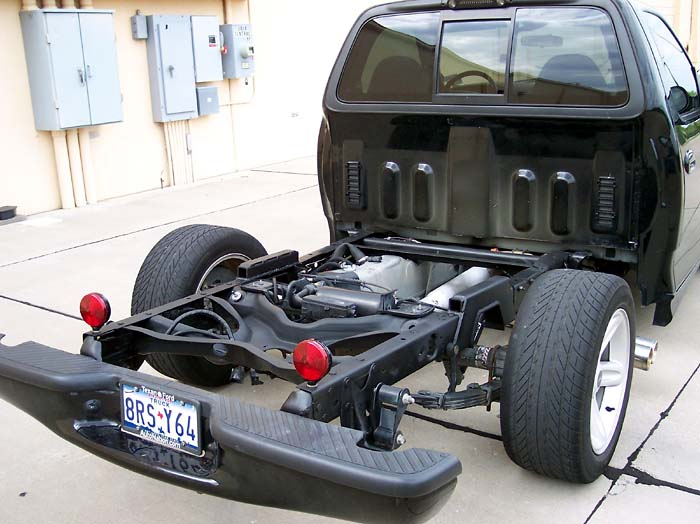
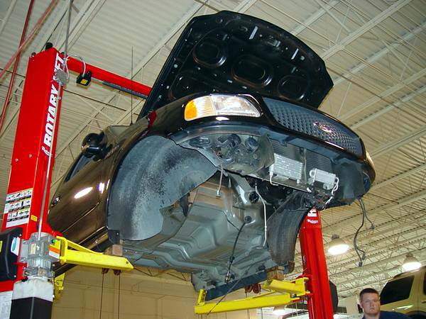
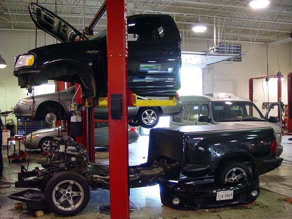
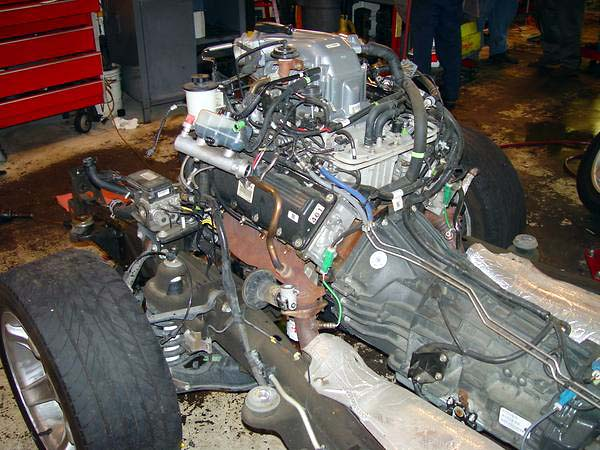

|
Bed Removal |
| Thanks to Tallimeca of F150online and others, we now have a definitive bed removal guide with photos. |
| Step 1: Disconnect the wiring harness. There is a major disconnect in the main wiring harness that is just behind the bumper, even with the frame rail. |
| Step 2: Remove the license plate lights and push the harness through so that it can come off with the bed. |
| Step 3: Remove the bumper. |
| Step 4: Remove the filler tube hardware. Remove the worm gear clamp that goes around the filler tube that attaches to a small flat tab underneath the bed. Remove the three screws that hold the filler tube to the body inside the fuel door. |
| Step 5: Remove the bed bolts. A Torx T50 will work, but they are actually T52s. Many have reported that they are frozen stuck. Some penetrating oil and an impact screwdriver (shown) is the solution for frozen bolts. It may make sense to use some anti-seize (love that stuff) when reinstalling the bolts. |
| Step 6: Tape the rear corners of the cab and front corners of the bed to protect them. |
|
Step 7: Attach straps or chains to the cargo hooks in the bed and lift the bed off. Or, get a helper. Two people can just lift it off. |
|
This guy has a great idea -- slap
on some trailer lights and put the bumper back on and you can drive it
to the shop for welding, etc. I stole it. I used magnetic
lights.
 More photos and my hoist setup here. And on a related topic, here are some shots with the cab off:    |